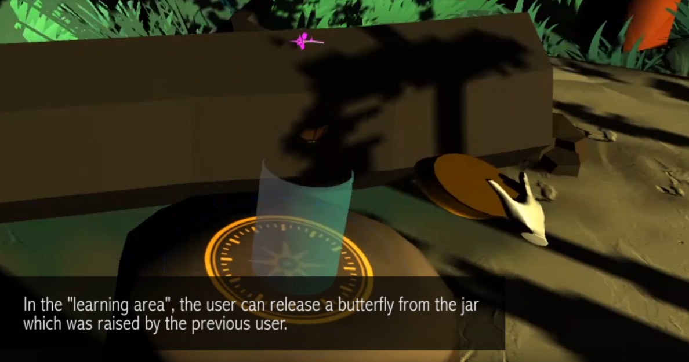
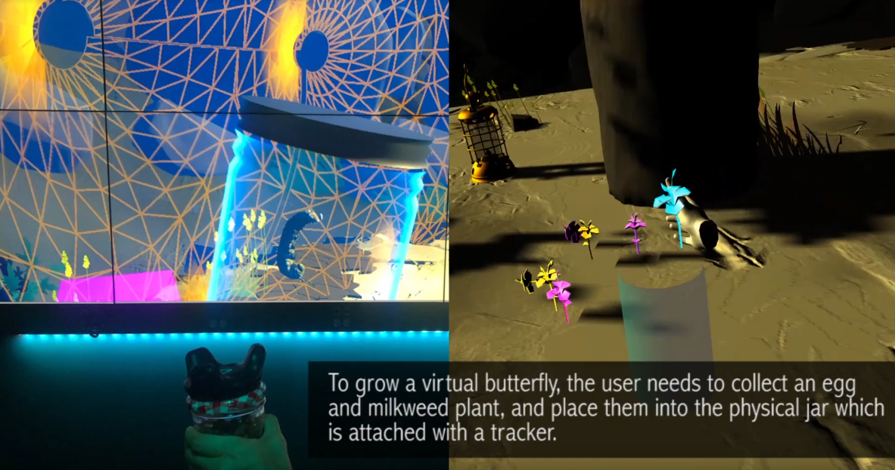

Tangible VR: Traverse Space in XR to Grow a Virtual Butterfly
research | unity development
Collaborator: Brenda Lopez (Learning Sciences Research Institute, University of Illinois at Chicago)
Publication: SUI '20: Symposium on Spatial User InteractionOctober 2020 Article No.: 32 Pages 1–2
https://doi.org/10.1145/3385959.3421720
Immersive reality technologies have been widely utilized in the area of cultural heritage, also known as Virtual Heritage. We present a tangible Virtual Reality (VR) interaction demo that allows users to freely walk in the physical space while engaging with digital and tangible objects in a “learning area”. The space setup includes stations that are used symbiotically in the virtual and physical environments, such setup defines consistency throughout the experience. With this method, we enhance the immersive learning experience by mapping the large virtual space into a smaller physical place with a seamless transition.

research
The contents of the experience are based on the notion that the population of Monarch butterflies is rapidly decreasing, and the urgent need to preserve their biosphere. Our demo allows users to traverse in space by walking within a 3m x 3m area and applies restrained teleportation as the locomotion technique. Additionally, space contains stations that become persistent, to promote physical interactions throughout the experience. Such setup reduces the cost of installation and allows users to interact with virtual elements via tangible objects. Meanwhile, for the intended learning objectives of cultural heritage, we balanced cultural context, interaction, and immersion.

